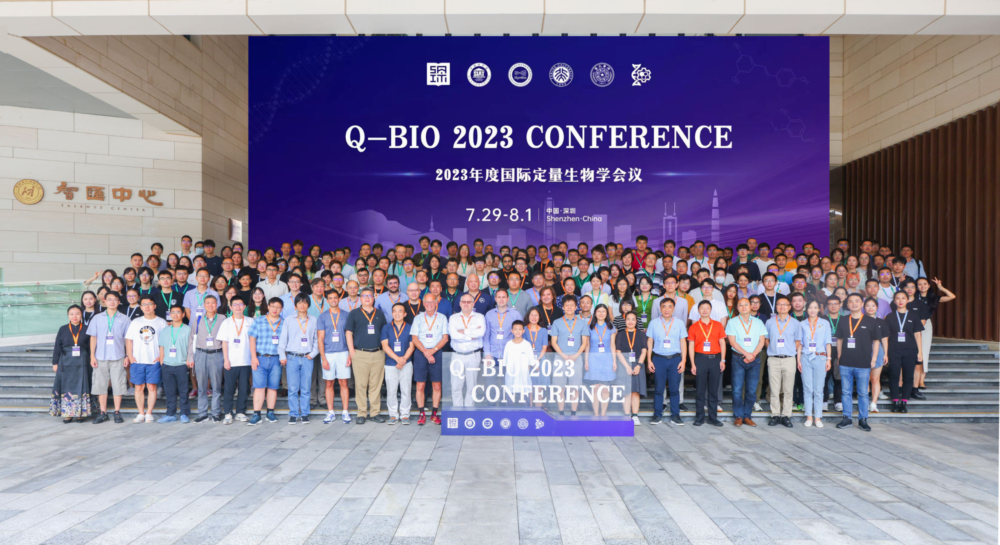

| Home | Registration | Program | Directions | Flyer |
We are excited to announce that the 18th annual q-Bio 2024 Conference is coming to Shenzhen, China again on July 26th - July 29th! Please visit the following website to view important contents (Registration will open in February 2024).
The annual q-bio conference is an intimate and dynamic venue that brings together researchers who aim to advance predictive modeling and theoretical understanding of cellular and molecular biological systems in coordination with quantitative experimentation. This is the second time that this annual event in quantitative biology field will be held out in Shenzhen, China.
Organizers and sponsors of the conference are:
|  |